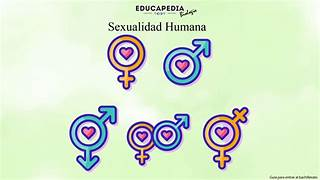
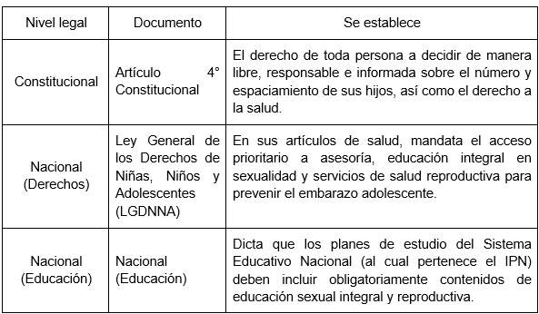
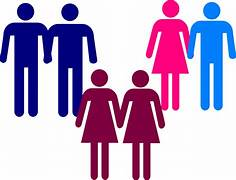

Normatividad en México: La NOM-047-SSA2-2015 (atención a la salud del grupo etario de 10 a 19 años).La norma establece que el personal de salud y las instituciones deben ofrecer espacios donde se proporcione información sobre salud sexual y reproductiva de manera empática, cálida y adecuada al desarrollo evolutivo y cognitivo del adolescente.
La NOM-047 dictamina de forma explícita que los adolescentes tienen derecho a recibir consejería y métodos anticonceptivos temporales sin la necesidad de estar acompañados por un padre, madre o tutor legal. El personal de salud debe respetar su capacidad de tomar decisiones libres e informadas.
La norma obliga al personal a realizar una "búsqueda intencionada" de signos de acoso, violencia sexual, coacción o prácticas de riesgo durante las consultas o intervenciones con adolescentes. Si se identifica violencia sexual, la norma exige activar de inmediato los protocolos de atención y protección (vinculados a la NOM-046-SSA2-2005, que ve violencia familiar y sexual).
La NOM-047 se conecta con estas tres leyes jerárquicamente superiores:

El modelo señala explícitamente que el desarrollo del estudiante debe abarcar cuatro dimensiones esenciales: saber (conocimiento), saber hacer (habilidades), saber ser (actitudes y valores) y saber convivir (relaciones sociales).
